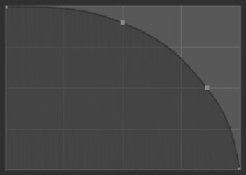

衰减
衰减控制笔刷衰减的 强度。衰减从笔刷的中心（曲线的左侧部分）映射到其边界（曲线的右侧部分）。更改曲线的形状将使笔刷更软或更硬。更多信息请查看曲线部件。

笔刷曲线示例。
- 曲线预设
- 自定义:
你可以通过手动操作曲线部件中的控制点来选择如何确定从笔刷中心到边界的衰减强度。曲线部件的底部也有一些预设的自定义曲线，可以单独使用，也可以作为调整的起点。
自定义预设类型。 
平滑。
 球形。

根形。

锐利。

线性。

常量。
- 平滑化:
中心强度、边界强度和它们之间的衰减过渡均匀分布。
- 更平滑:
类似于 平滑，但在逐渐变细之前产生更宽的笔刷中心点。
- 球形:
笔刷的强度主要在其最强点，在笔刷边缘附近具有陡峭的衰减。
- 根凸:
类似于球形，但中心是一个更集中的点。
- 锐利:
笔刷的中心是最强的点，然后呈指数级逐渐减小到较低的强度，从而产生一个细点。
- 线性:
由于中心是最强的，因此当它到达笔刷的边界时，强度会不断减弱。
- 更锐利:
与 锐利 类似，但中心点更浓缩。
- 反向平方:
平滑 和 球形 之间的混合体。
- 常量:
整个笔刷的力度保持一致。这将在笔刷边界处形成锐利的边缘。

（从左到右）平滑，更平滑，球体，根，尖锐，线性，更尖锐，平方反比，常数。
- 衰减形状
使用投影或球形衰减。请注意，这在纹理绘制模式下不受支持。
- 球形:
从中心向外在球体中应用笔刷影响。
- 投射:
这将笔刷影响转换为一个圆柱体（将忽略沿视图的深度），而非球体。它可用于沿网格的轮廓来调整其轮廓。
前面衰减
远离视图的方向笔刷笔触会逐渐消失，以防止出现粗糙的边缘。
- 法向衰减 / 前面衰减
If disabled, the normal of the surface has no effect on the falloff.
- 角度
衰减开始的角度。